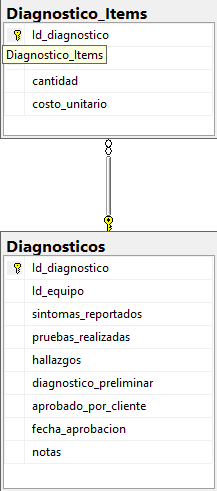

Diagrama de la tabla en la base de datos
Registrar diagnósticos y generar cotizaciones, mediante un sistema que integre síntomas, pruebas y refacciones requeridas, para proporcionar presupuestos claros y medibles al cliente en el punto de atención.
CREATE TABLE Diagnosticos (
Id_diagnostico VARCHAR(20) PRIMARY KEY, -- Formato: DG-YYYY-####
Id_orden_servicio INT NOT NULL, -- Identificador de la orden de servicio
Id_personal INT NOT NULL, -- Identificador del personal que realiza el diagnóstico
sintomas_reportados TEXT NOT NULL,
pruebas_realizadas TEXT,
hallazgos TEXT,
diagnostico_preliminar TEXT,
id_item TEXT, -- Lista de refacciones o servicios requeridos (puede ser JSON o texto delimitado)
total_cotizado AS (
0
) PERSISTED, -- Campo calculado, inicializado en 0 por simplicidad
aprobado_por_cliente BIT DEFAULT 0, -- 0 = pendiente, 1 = aprobado
fecha_aprobacion DATETIME NULL,
notas TEXT NULL
);
-- Ejemplo de inserción de datos
INSERT INTO Diagnosticos (
Id_diagnostico, Id_orden_servicio, Id_personal, sintomas_reportados, pruebas_realizadas,
hallazgos, diagnostico_preliminar, id_item, aprobado_por_cliente, notas
)
VALUES (
'DG-2025-0001', 101, 5, 'No enciende', 'Verificación de fuente y batería',
'Fuente dañada', 'Se requiere cambio de fuente', '["Fuente 65W", "Mano de obra"]', 0, 'Cliente contactado'
);